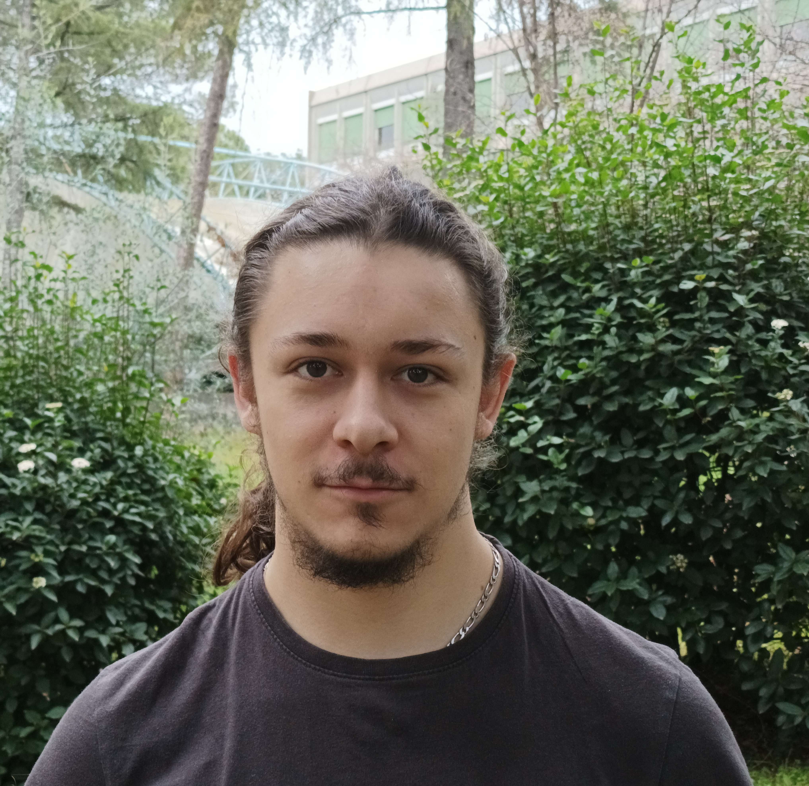

Jean-Philippe Chavarnac
Qu'est ce qu'un Portfolio ?
Un portfolio est une collection d'échantillons de travaux qui mettent en valeur vos compétences et réalisations. Il sert à présenter votre expérience professionnelle, vos projets et vos talents de manière organisée et visuelle.
A propos de moi
Je suis étudiant en troisième année de génie électrique et informatique industrielle avec la spécialité électronique et systèmes embarqués.
Dans le cadre de ma troisième année de formation, je recherche un stage de 16 semaines, entre le 19 janvier et le 15 mai 2026.
Grâce à ma formation et à mes expériences, j’ai acquis des compétences techniques en systèmes électroniques et en programmation. Je maîtrise notamment KiCad et STM32CubeIDE, et j’ai de l’expérience en C, en VHDL et en Python. J’ai pu développer ces compétences à travers la conception et le test de cartes électroniques, ainsi que le développement de logiciels embarqués et d’outils de configuration. En plus de ces aspects techniques, j’ai renforcé mon autonomie, mon adaptabilité et mes compétences en validation de systèmes électroniques grâce à mes projets et stages, comme la conception d’une carte de commande moteur, d’un minirobot sumo, ou encore d’un hub USB sur mesure. Pour en savoir plus, je vous invite à parcourir mon portfolio.